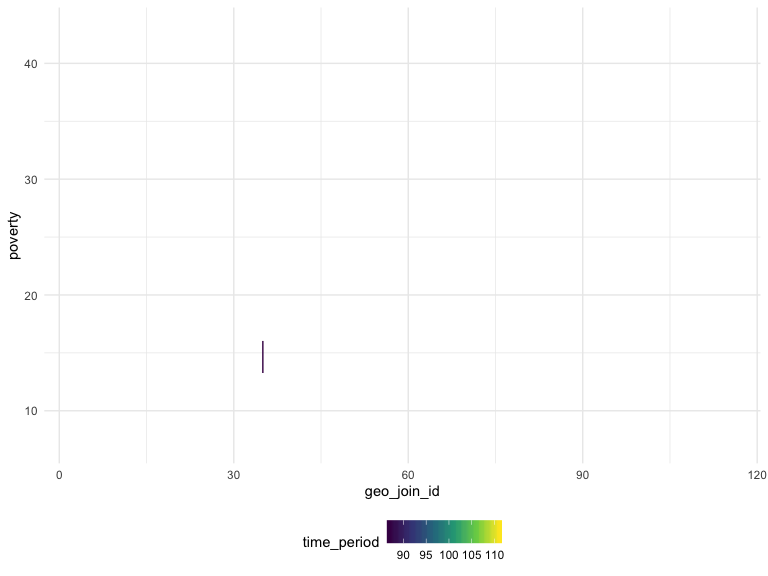

Reading in the csv file.
asthma_data = read.csv(file = "./final_data/asthma_data.csv") %>%
janitor::clean_names() %>%
mutate(
data_value = as.numeric(data_value),
year = as.character(year_description)) %>%
select(year, geo_entity_id, name, data_value) %>%
pivot_wider(names_from = name,
values_from = data_value) %>%
janitor::clean_names() %>%
view()Loading and tidying the new dataset with all available data. THis generates 4536 observations.
all_data_1 =
read.csv(file = "./final_data/all_available_data.csv") %>%
janitor::clean_names() %>%
rename(year = time_period) %>%
mutate(
data_value = as.numeric(data_value),
geo_join_id = as.numeric(geo_join_id),
year = as.character(year),
name = as.character(name)) %>%
filter(data_value != "NULL",
str_detect(name, c("[A]sthma", "[C]ockroach", "[P]overty")),
!str_detect(name, c("[N]TA")),
name != "Children 0-13 Years Old Ever Diagnosed with Asthma",
name != "Youth Asthma in the Past 12 Months",
name != "Adults Reporting Cockroaches in the Home",
geo_type_name == "UHF42") %>%
group_by(name) %>%
janitor::clean_names() %>%
view()Tidying up the data using factors instead of strings for the name variable.
all_data =
read.csv(file = "./final_data/all_available_data.csv") %>%
janitor::clean_names() %>%
mutate(data_value = as.numeric(data_value),
time_period = recode(time_period, "2010-2011" = "2011", "2011-2012" = "2012", "2012-2013" = "2013", "2013-2014" = "2014", "2010-14" = "2011"),
geo_join_id = as.numeric(geo_join_id)) %>%
filter(name %in% c("Homes with Cockroaches",
"Poverty",
"Public School Children (5-14 Yrs Old) with Asthma",
"Public School Children (5-14 Yrs Old) with Persistent Asthma"),
measure == "Percent" | measure == "Rate",
geo_type_name == "UHF42",
time_period %in% c("2011", "2012", "2013", "2014")) %>%
mutate(row = row_number(),
time_period = as.numeric(time_period)) %>%
pivot_wider(names_from = "name",
values_from = "data_value") %>%
janitor::clean_names() %>%
select(geo_join_id, time_period, homes_with_cockroaches, poverty, public_school_children_5_14_yrs_old_with_asthma, public_school_children_5_14_yrs_old_with_persistent_asthma) %>%
view()Filtering for variables of interest (1344 observations)
test =
all_data %>%
group_by(time_period, geo_join_id) %>%
summarise_each(funs(sum(., na.rm = TRUE))) %>%
view()all_data %>%
select(geo_join_id, poverty, time_period) %>%
ggplot(aes(x = geo_join_id, y = poverty, color = time_period)) +
geom_line(aes(group = time_period))